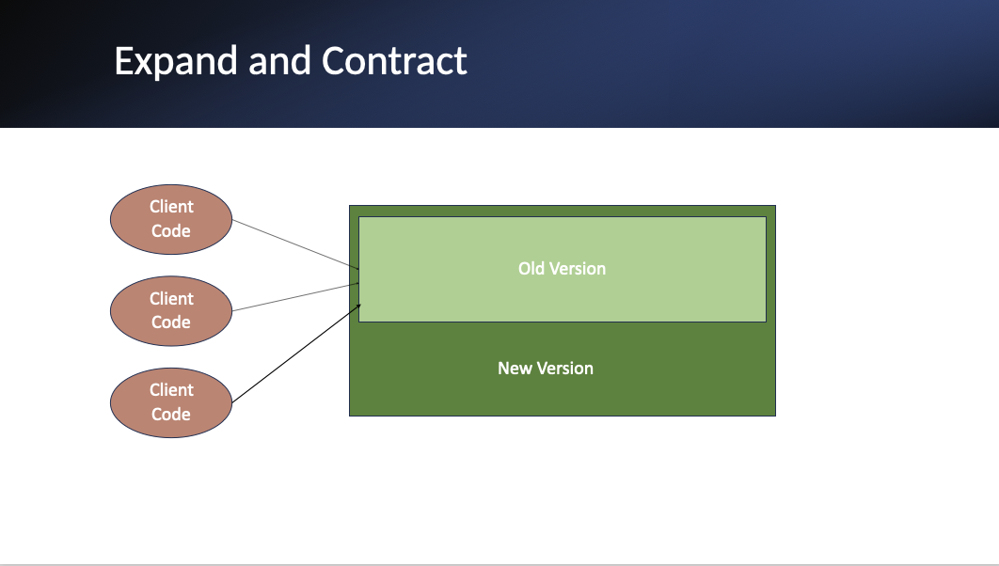
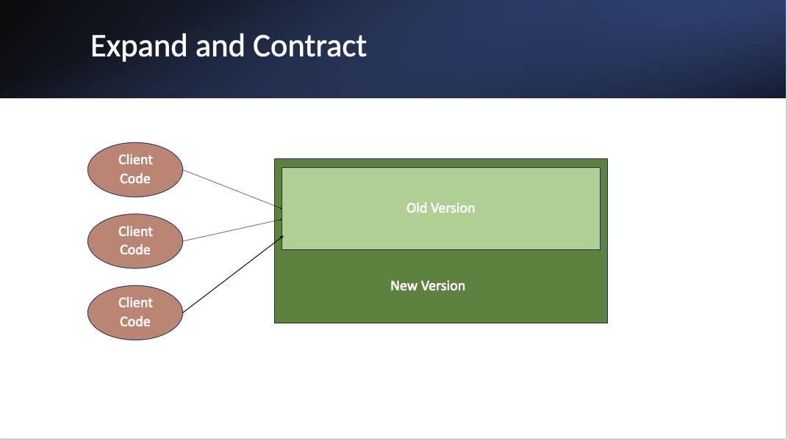
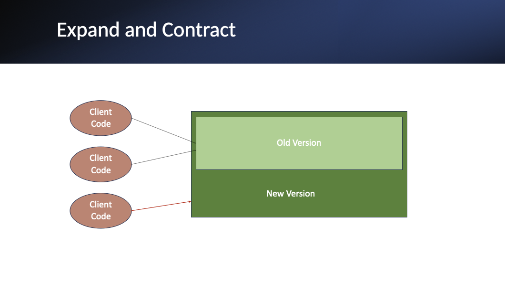

Expand and Contract: A Gradual Approach to Code Changes
In the world of software development, making significant changes to your codebase can be a daunting task. Traditional methods like branching in source control or using conditional statements have their drawbacks. Enter "Expand and Contract," a technique that offers a more gradual and manageable approach to implementing large-scale changes[1][2].
What is Expand and Contract?
Expand and Contract[1], also known as the Parallel Change pattern[2] , is a well-established approach for introducing backward-incompatible changes[1][2]. It consists of three distinct phases: expand, migrate, and contract.
The Key Benefits
- Zero downtime: Incompatible changes to data structures can be deployed without any system downtime
- Easier testing: The pattern allows running application instances with old and new code in parallel, making it easier to deploy and test code changes on a subset of instances first. Incompatible changes to data structures can be deployed without any system downtime
- Enables advanced release techniques: The backwards compatible nature of changes allows for feature flags, dark launching, and canary releasing
The Expand Phase
In the expand phase, the code is modified to support both old and new versions simultaneously. This allows existing clients to continue using the old version while new changes are introduced incrementally. For example, when introducing a new mandatory field in a class, it would initially be added as optional to maintain compatibility with the old version.
The Migrate Phase
During the migrate phase, all client code is gradually updated to use the new version, and the old version is deprecated. In our example, all code would now expect and be able to process the new optional field.
The Contract Phase
Once the migrate phase is complete, the old version can be removed in the contract phase. At this point, the new field can be made mandatory, as all code will now supply it.
Conclusion
The Expand and Contract pattern provides a safe and gradual approach to implementing breaking changes in software systems. By following this pattern, developers can make significant modifications to their codebase while minimizing disruption to existing functionality. It is a good choice for implementing complex changes in systems, particularly those that cannot afford downtime.